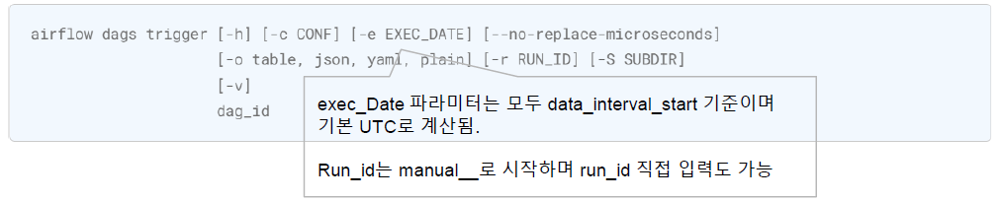

Template Variabler
DAG Creation, Bash Operator, Task Performance Subject,
Engineering
template
- case 1
- 위의 경우를 Task_1 뿐만 아니라 DAG_B의 task_k 에도 선행 의존관계가 걸리도록 External Task 센서를 하나 달도록 개선
- case 2
- 위의 경우, Task_1이 완료되면 또 다른 dag 을 trigger 되고 싶은데 DAG A 를 수정해야할 경우
- TriggerDagRun 오퍼레이터와 ExternalTask 센서를 많이 사용하다보면 연결관리 에 많은 노력이 필요 (강한 연결)
- 큐시스템과 같이 Job 수행이 완료된 Task 는 Push 하고 센싱이 필요한 task 은 큐 시스템을 구독하는 방식을 쓴다면 ? (약한 연결)
- Produce / Consume 구조를 이용하여 Task 완료를 알리기 위해 특정 키 값으로 Produce 하고 해당 키를 Consume 하는 DAG 을 트리거 스케줄 할 수 있는 기능
- 실제 큐가 있는 것은 아니고 DB 에 Produce / Consume 내역을 기록
- Dataset 은 Pub/sub 구조로 DAG 간 의존관계를 주는 방법
- Unique 한 String 형태의 Key 값을 부여하여 Dataset Publish
- Dataset 을 Consume 하는 DAG 은 스케줄을 별도로 주지 않고 리스트 형태로 구독할 Dataset 요소들을 명시
- Dataset에 의해 시작된 DAG 의 Run_id 는 dataset_triggered__{trigger 된 시간 } 으로 표현됨
- Airflow 화면 메뉴 중 Datasets 메뉴를 통해 별도로 Dataset 현황 모니터링 가능
- N개의 Dataset 을 구독할 때 스케줄링 시점은 ?
- 마지막 수행 이후 N 개의 Dataset 이 모두 재 업데이트되는 시점

- 마지막 수행 이후 N 개의 Dataset 이 모두 재 업데이트되는 시점
- 목적: DAG 하위 모든 오퍼레이터에 공통 적용될 파라미터를 입력
- 어떤 파라미터들이 적용 가능할까?
- 오퍼레이터에 공통 적용할 수 있는 파라미터들
- BaseOperator 클래스 생성자가 가지고 있는 파라미터
- airflow doc
- Code
- DAG 파라미터는 DAG 단위로 적용될 파라미터
- 개별 오퍼레이터에 적용되지 않음
- DAG 파라미터는 default_args 에 전달하면 안됨
- Base 오퍼레이터 파라미터는 개별 Task 단위로 적용될 파라미터.
- Task 마다 선언해줄 수 있지만 DAG 하위 모든 오퍼레이터에 적용 필요시 default_args 를 통해 전달 가능
- default_args 에 전달된 파라미터보다 개별 오퍼레이터에 선언된 파라미터가 우선순위를 가짐
- airflow doc
- email 파라미터와 email_on_failure 파라미터를 이용
- email 파라미터만 입력하면 email_on_failure 파라미터는 True 로 자동설정됨
- Email 받을 대상이 1 명이면 string 형식으로 , 2 명 이상이면 list 로 전달
- 그런데 협업 환경에서 DAG 담당자는 수시로 바뀔 수 있고 인원도 수시로 바뀔 수 있는데 그때마다 DAG 을 뒤져서 email 리스트를 수정해야 할까 ?
- 이럴때 Variable 을 이용하자
- 개념: 오퍼레이터 수행시 정해놓은 시간을 초과하였는지를 판단할 수 있도록 설정해놓은 시간 값 파이썬의 timedelta 로 정의
- 동작: 설정해놓은 SLA 를 초과하여 오퍼레이터 running 시 SLA Miss 발생 , Airflow UI 화면에서 Miss 건만 조회 가능 + email 발송 가능
- SLA Miss 발생시 task 가 실패되는 것은 아니며 단순 Miss 대상에 기록만 됨
- SLA 는 DAG 파라미터가 아니며 BaseOperator 의 파라미터
- airflow docs
- SLA Miss시 수행할 함수 지정 가능-Source code for airflow.models.dag
- sla_miss_callback 파라미터
- DAG의 파라미터임 (BaseOperator 의 파라미터가 아니라는 것에 유의)
- 각 Task 의 SLA timeout 카운트 시작은 DAG 의 시작시간 기준임
- DAG의 시작시간 기준 → 명목적인 시작 시간 (data_interval_start)
- 만약 Pool 이 부족하거나 스케줄러의 부하로 인해 DAG 이 스케줄보다 늦게 시작했다면 늦게 시작한만큼 SLA 시간 카운트는 소요됨
- 실질적 DAG 시작 시간을 기준으로 카운트하지 않음
- 첫 스케줄에서는 SLA Miss 가 기록되지 않음 (두 번째 스케줄부터 기록)
- Task수준의 timeout 과 DAG 수준의 timeout 이 존재
- Task수준의 timeout 파라미터 : execution_timeout
- DAG수준의 timeout 파라미터 : dagrun_timeout
- task1 >> task2 >> task3 예시
- 공통점: 파이썬의 timedelta 함수로 timeout 기준 시간 정의
- Airflow가 설치되어 있는 서버에서 쉘 명령을 이용하여 Airflow를 컨트롤 할 수 있도록 많은 기능들을 제공하고 있음
- airflow cli doc
- Cli를 잘 쓰면 좋은 이유
- 일괄작업: Airflow UI에서 할 수 없는 일괄 작업 방식을 제공(ex: connection 일괄 등록)
- 특수기능: Airflow UI에서는 할 수 없는 기능을 제공(ex: backfill)
- 자동화: Airflow UI에서 직접 눈으로 보고 클릭하는 방식이 아닌 프로그래밍에 의한 제어가 가능해짐
manual 로 dag trigger 하거나 run_id 를 직접 넣어 trigger 할 수 있는 기능

CLI-Dag Trigger #> airflow dags trigger dags_seoul_api_corona
- 입력 스케줄 구간에 대해 일괄 (재)실행 (스케줄 이력이 없는 과거 날짜도 가능)
- Clear 작업을 start / end 구간으로 일괄 재실행
- Backfill과 달리 수행되지 않은 스케줄 구간은 실행할 수 없음
- Backfill되었던 DAG은 clear 불가함. reset-dagruns 옵션과 함께 다시 Backfill 수행해야 함
- 공통점: CLI 명령으로 DAG 실행 가능
1 Dataset을 이용한 Dag 트리거
1.1 Dataset의 필요성
1.2 정리
2 DAG의 default_args 파라미터
2.1 DAG 의 default_args 파라미터
from airflow import DAG
from airflow.operators.bash import BashOperator
from datetime import timedelta
import pendulum
from airflow.models import Variable
email_str = Variable.get("email_target")
email_lst = [email.strip() for email in email_str.split(',')]
with DAG(
dag_id='dags_sla_email_example',
start_date=pendulum.datetime(2023, 5, 1, tz='Asia/Seoul'),
schedule='*/10 * * * *',
catchup=False,
) as dag:
task_1 = BashOperator(
task_id='task_1',
bash_command='sleep 10m',
sla: timedelta(seconds=70), #SLA 설정
email: 'sdf@sdfsfd.com'
)
task_2 = BashOperator(
task_id='task_2',
bash_command='sleep 2m',
sla: timedelta(seconds=70), #SLA 설정
email: 'sdf@sdfsfd.com'
)
task_1 >> task_2from airflow import DAG
from airflow.operators.bash import BashOperator
from datetime import timedelta
import pendulum
from airflow.models import Variable
email_str = Variable.get("email_target")
email_lst = [email.strip() for email in email_str.split(',')]
with DAG(
dag_id='dags_sla_email_example',
start_date=pendulum.datetime(2023, 5, 1, tz='Asia/Seoul'),
schedule='*/10 * * * *',
catchup=False,
default_args={
'sla': timedelta(seconds=70),
'email': 'sdf@sdfsfd.com'
}
) as dag:
task_1 = BashOperator(
task_id='task_1',
bash_command='sleep 10m'
)
task_2 = BashOperator(
task_id='task_2',
bash_command='sleep 2m'
)
task_1 >> task_22.2 BaseOperator 파라미터 vs Dag 파라미터
2.2.1 DAG Parameter
2.2.2 BaseOperator Parameter
from airflow import DAG
from airflow.operators.bash import BashOperator
from datetime import timedelta
import pendulum
from airflow.models import Variable
email_str = Variable.get("email_target")
email_lst = [email.strip() for email in email_str.split(',')]
with DAG(
dag_id='dags_sla_email_example',
start_date=pendulum.datetime(2023, 5, 1, tz='Asia/Seoul'),
schedule='*/10 * * * *',
catchup=False,
default_args={
'sla': timedelta(seconds=70),
'email': 'sdf@sdfsfd.com'
}
) as dag:
task_1 = BashOperator(
task_id='task_1',
bash_command='sleep 10m'
)
task_2 = BashOperator(
task_id='task_2',
bash_command='sleep 2m',
sla=timedelta(minutes=1)
)
task_1 >> task_23 Task 실패시 Email 발송하기
3.1 Email 발송 위한 파라미터 확인
3.2 Email 발송 대상 등록
from airflow import DAG
from airflow.operators.bash import BashOperator
from airflow.decorators import task
from airflow.exceptions import AirflowException
import pendulum
from datetime import timedelta
from airflow.models import Variable
email_str = Variable.get("email_target")
email_lst = [email.strip() for email in email_str.split(',')]
with DAG(
dag_id='dags_email_on_failure',
start_date=pendulum.datetime(2023,5,1, tz='Asia/Seoul'),
catchup=False,
schedule='0 1 * * *',
dagrun_timeout=timedelta(minutes=2),
default_args={
'email_on_failure': True,
'email': email_lst
}
) as dag:
@task(task_id='python_fail')
def python_task_func():
raise AirflowException('에러 발생')
python_task_func()
bash_fail = BashOperator(
task_id='bash_fail',
bash_command='exit 1',
)
bash_success = BashOperator(
task_id='bash_success',
bash_command='exit 0',
)4 SLA로 task 수행 감시 & Email 발송하기
4.1 SLA파라미터 이해
4.2 SLA 제약사항
4.2.1 생각하는 SLA timeout 카운트 방식
4.2.2 실제 Airflow 의 SLA timeout 카운트 방식
4.3 SLA Miss 시 email 발송하기
from airflow import DAG
from airflow.operators.bash import BashOperator
from datetime import timedelta
import pendulum
from airflow.models import Variable
email_str = Variable.get("email_target")
email_lst = [email.strip() for email in email_str.split(',')]
with DAG(
dag_id='dags_sla_email_example',
start_date=pendulum.datetime(2023, 5, 1, tz='Asia/Seoul'),
schedule='*/10 * * * *',
catchup=False,
default_args={
'sla': timedelta(seconds=70),
'email': email_lst
}
) as dag:
task_slp_30s_sla_70s = BashOperator(
task_id='task_slp_30s_sla_70s',
bash_command='sleep 30'
)
task_slp_60_sla_70s = BashOperator(
task_id='task_slp_60_sla_70s',
bash_command='sleep 60'
)
task_slp_10s_sla_70s = BashOperator(
task_id='task_slp_10s_sla_70s',
bash_command='sleep 10'
)
task_slp_10s_sla_30s = BashOperator(
task_id='task_slp_10s_sla_30s',
bash_command='sleep 10',
sla=timedelta(seconds=30)
)
task_slp_30s_sla_70s >> task_slp_60_sla_70s >> task_slp_10s_sla_70s >> task_slp_10s_sla_30s5 timeout 설정하기
5.1 Timeout 파라미터 이해
5.1.1 execution_timeout
5.1.2 datgrun_timeout

5.2 정리
| Comparision | sla | execution_timeout | dagrun_timeout |
|---|---|---|---|
| 파라미터 정의 위치 | BaseOperator | BaseOperator | DAG |
| 적용 수준 | Task | task | DAG |
| 기능 | 지정한 시간 초과시 Miss 기록 | 지정한 시간 초과시 task fail 처리 | 지정한 시간 초과시 DAG fail 처리 |
| email 발송 가능 여부 | O | O | X |
| timeout 발생시 후행 task 상태 | 상관없이 지속 | Upstream_failed | Skipped (current) /No status (not run) |
| 스케쥴 필요 | O | X | X |
6 Airflow CLI 사용하기
6.1 cli - dag trigger
6.2 cli - dag backfill
#> airflow dags backfill -s 2023-04-19 -e 2023-04-21 dags_seoul_api_corona
# start, end 파라미터를 dash string 형태로 입력하면 UTC로 간주되며 타임스탬프 형태로 직접 작성도 가능 (run_id에서 해당하는 날짜 구간을 찾아 실행)
#> airflow dags backfill -s 2023-04-19T22:00:00+00:00 -e 2023-04-20T22:00:00+00:00 —
reset-dagruns dags_seoul_api_corona6.3 cli - task clear
#> airflow tasks clear -s 2023-05-07 -e 2023-05-12 dags_seoul_api_corona
#> airflow tasks clear -s 2023-05-07T22:00:00+00:00 -e 2023-05-12T22:00:00+00:00
dags_seoul_api_corona6.4 정리
| Comparision | trigger | backfill | clear |
|---|---|---|---|
| 목적 | 특정 날짜로 DAG Trigger | Start ~ end 구간의 스케줄 실행 | Start ~ end 구간 내 이미 수 |
| 행되었던 스케줄 재실행 | |||
| Run type | -r 옵션으로 지정 가능. 없으면 Manual | Backfill | 원래의 run_type |
| 기 수행된 run_id가 존재하는 경우 | 동일 run_id 가 존재하는 경우 에러 발생 | Run_type 을 Backfill 로 덮어쓰며 | |
| 재실행 | 재실행 | ||
| 구간 지정 | 불가 | 가능 | 가능 |
| 과거 날짜 적용 가능 | 가능 | 가능 | 불가 |
| task 선택 가능 | 불가 | 가능 | 가능 |